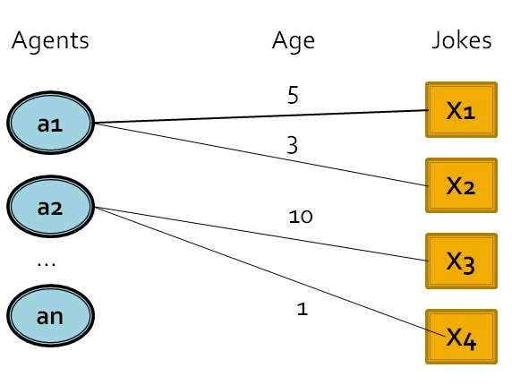
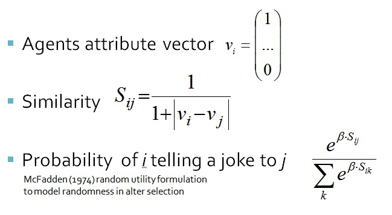
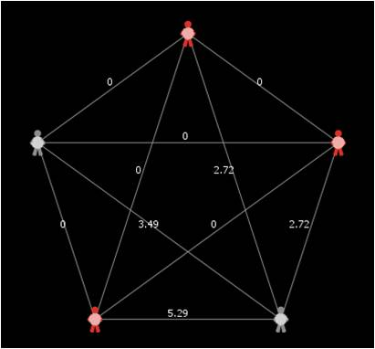
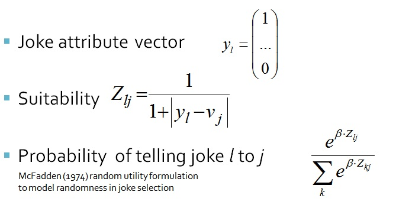
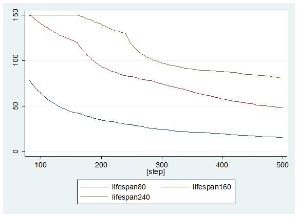
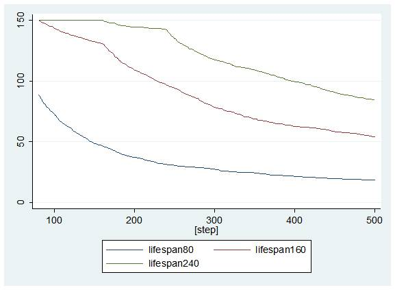
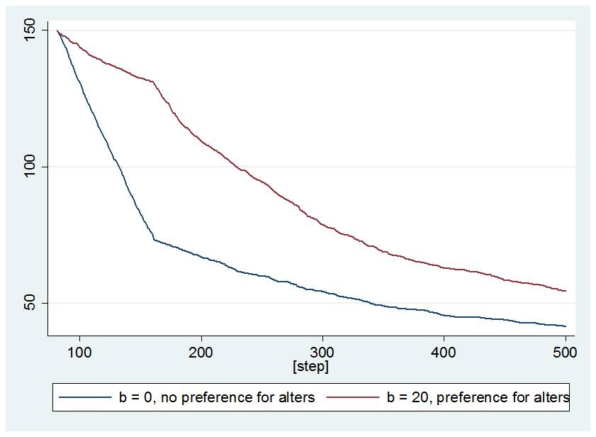
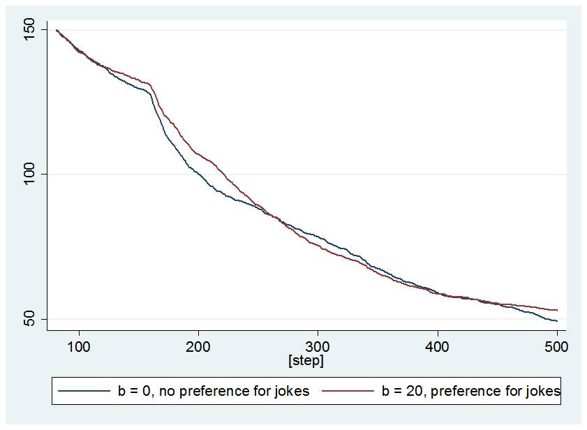

Why won't cannibals eat clowns?
Initial idea: Under which conditions do jokes survive?
After we had thrown a lot of ideas on the table we decided that we wanted to look at the dynamics of how jokes may survive over time. We initially intended to study this using an agent-based model where the agents would have an initial repertoire of jokes, and as an agent heard yet another joke, that joke would be appended to the repertoire. Two of our central ideas going in to the modelling stage were that (i) agents would not interact at random, but would they tell their joke given some kind of similarities, and (ii) jokes are more or less funny to different people given their cultural backdrop. And more...The model
Introduction
Above is a sketch overview diagram of how part of the model look like. At the left there is a column of agents, that is, persons that might either tell or get to hear a joke. As previously stated, each agent has a repertoire of jokes, here represented by a link to a joke. Their is thus a many-to-many have relation between an agents and a jokes. Each link between a agent and joke will have an age assigned to it, that keeps track of how long a joke has been in the repertoire, which is then used to make the jokes expire and fall out of a certain agent's repertoire.
Setup and algorithm
Our setup has 30 agents with 5 binary attributes, 150 jokes in total uniformly distributed over the agents. At each round 10 agents are randomly selected to tell a joke. Next three steps follow.- Step 1: Select alter
- Step 2: Choose a suitable joke from repertoire (given an alter)
- Step 3: Update joke repertoire of alter, kill jokes (if they've gotten old)
Select alter
As previously mentioned we intended not to let the joke tellers necessarily tell their jokes to a random person, as we thought that the dynamics would be very different given selective behaviour. Each agent has a vector of binary attributes as seen below and then the similarity is then given by the equation below. However we also embedded this similarity function inside a McFadden (1974) function that let us have a variable to pick with what amount of randomness we want to pick our alter. With the McFadden beta set to zero we have a network; with equal weights we get the graphs below.

With the McFadden beta set to five, we have a network of the type below.

Select joke
As the alter has been chosen the joke teller needs to select a joke. A joke is selected on its suitability for the alter. There are jokes that are generic on certain attributes, which is represented with a -1 in the corresponding row. And hence we only control for suitability between non-"-1" rows. Again we embedded the function in a McFadden-function, as in the equation below. Here the beta thereby controls the amount of randomness vs. the use of the suitability-function in the choice of which joke to tell. Results
The most important parameters of the dynamics in our model were how many jokes were told in each time period and how long a joke would stay in an agent's repertoire (lifespan of joke). In the graphs, lifespans of 80, 160 and 240 are plotted, with jokes where about 50% of the attributes are generic and no attributes are generic respectively. On the Y-axis we've got the number of surviving jokes, and on the X-axis time.

The most interesting result we got while studying the sound parameter space of our model is depicted in the graph below. Here again, the Y-axis is the number of jokes and the X-axis time. The lower curve is with the McFadden-beta associated to the selection of alter set to 0, that is with totally random selection of alter. The upper curve is with a relatively high McFadden-beta, that is with fairly high level of selectivness. To explain this variation of behaviour, we hypothesise a circling of a joke with in a group of similarly minded people. That is people sharing many attributes, which keeps even the less generic jokes alive for longer.

A variation of the McFadden-beta associated with the choice of joke did not matter in our tests, depicted below. Again, as beta is zero we have full randomness, and as beta is set to 20 we are fairly selective. We are however convinced that given large enough repertoires that this parameter will start to influence the survival of jokes.

Extensions
- Examine the distribution of jokes amongst agents (probably in some groups some mundane jokes get very popular)
- Examine the survival of specific jokes and not only the survival of specific forms of jokes.
- Determine suitability of jokes with threshold function (we use a linear function).
- Jokes should not be told at all when unsuitable (right now the best of all unsuitable jokes is told)
- Bring in "objective" funniness of jokes Investigate the role of the number of attributes (features)
- Ageing (as an updated attribute) as well as death/birth of agents and jokes